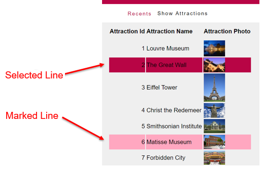

Marks with a back color the grid lines, while scanning them with the cursor. Only taken into account if the Allow Selection property of the grid is enabled. Values
Description
In a web application, if you want to allow the end-user to mark inside a grid a row as selected, you can set the Allow Selection property to True. This also enables the Allow Hovering property with True value by default. So, when the mouse passes over each row, it is painted in one color. Below you can see the effect in runtime:  The colors can be set in the Theme object, in the classes assigned to the properties Selected Row Class and Hover Row Class of the Grid class. Run-time/Design-timeThis property applies both at run-time and at design-time. Scope Objects: Web Panel, Transaction See Also
Allow Selection property
|
| Backlinks | |
| Allow Selection property | HoveringColor property |